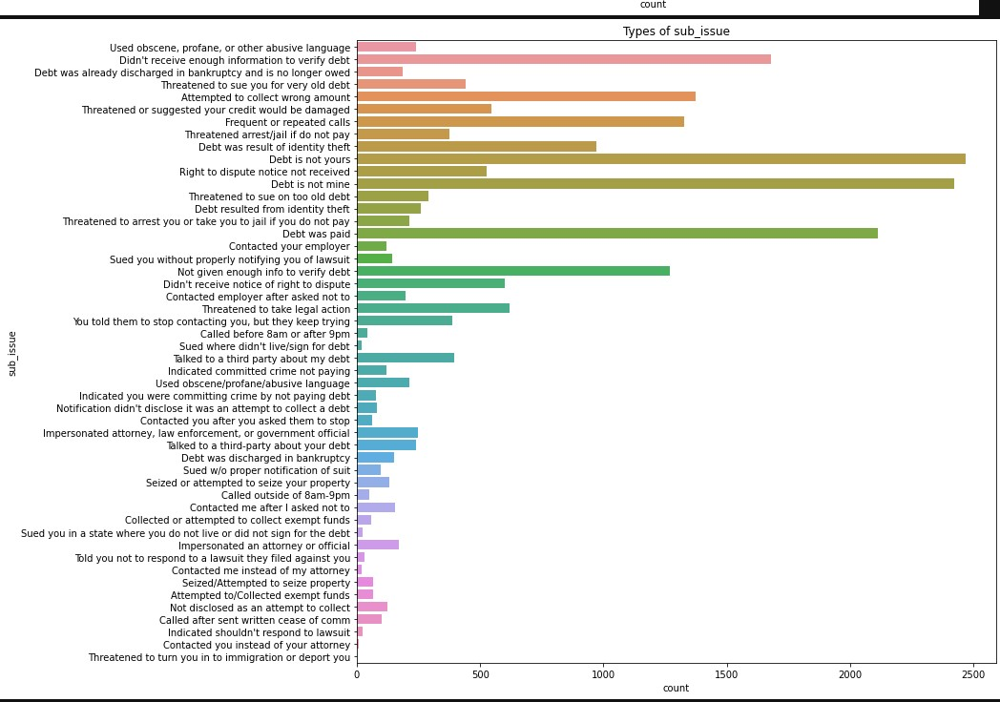

In-Progress
Practicing_with_CFPB_API
Warning: broken english, spelling, grammer. Fixed it later after the code is done>
Full Github of the codes in progressA massive dataset are available from the Consumer Financial Protection Bureau API, I decided to play with to use for machine-learning, Chatgpt and learning new skills
Due to its large size, more than 3 million data entries, I decided to examine data until I settled on consumer complaints on companies not giving them a timely response. Normalization and data-cleaning would take a long time. More manageable goal now, to see if it working. I decided to look more on states being a factor, with 2020 census adding other variable, many questions are still undecided.
I do learn many things from this exercise so far, mostly about the usefulness and limitation of Chatgpt
Skills used: Pythons (Geocoders,Folium, Seaborn, Panda, Python, Geocoder, Sklearns, Matplotlibs), API calls, GIS. Microsoft PowerBi (expected). Chatgpt prompt
Using Seaborn Visualizations to examine the data
Most charts that are created are used to examine the data rather than the final product. For example, thank to the following chart, I knew more about the different types of complaints of debt collections
This map can give a glance which states has most complaints with untimely company response